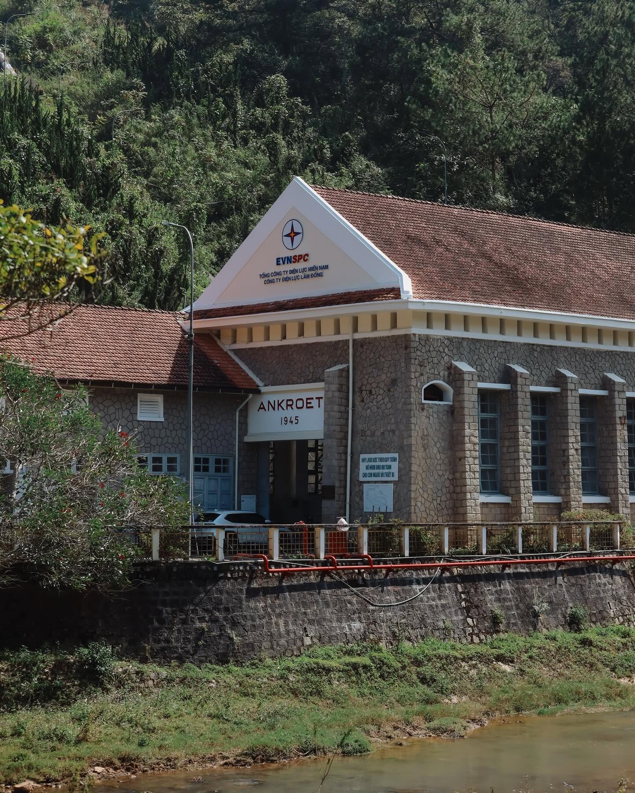
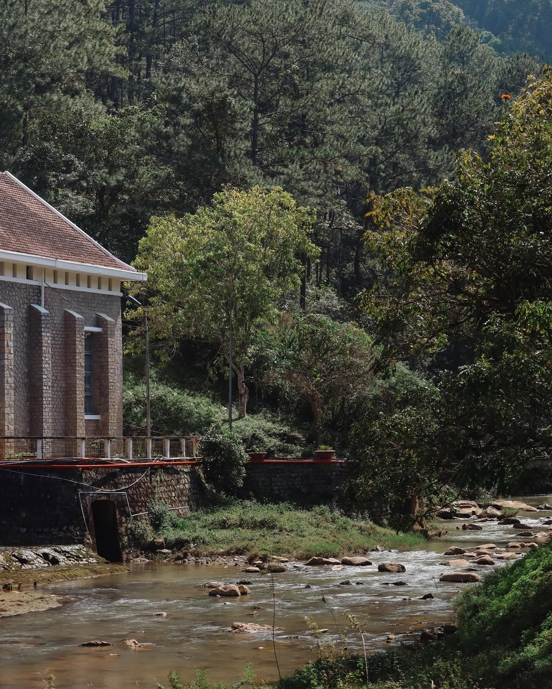
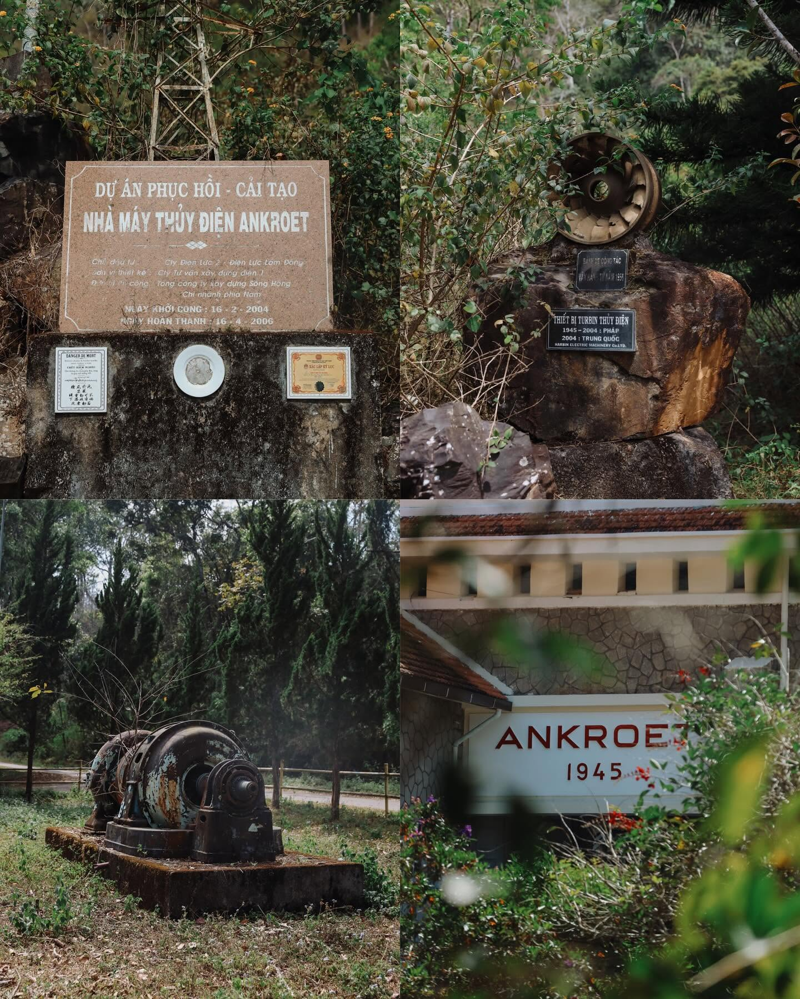
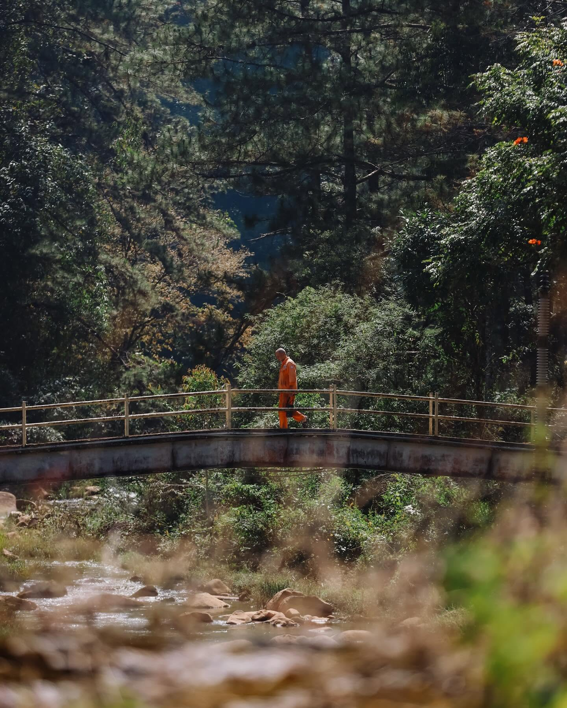
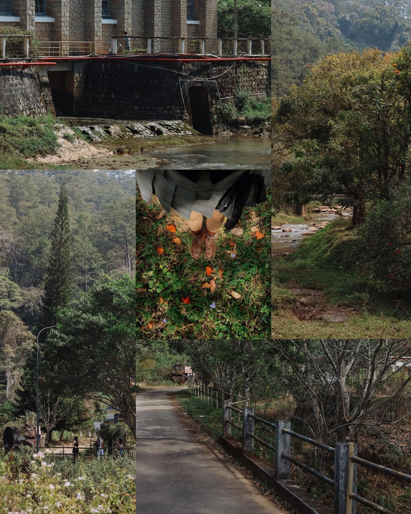

Tên đường Ankroet tại Đà Lạt là một trong số ít những tên đường từ thời Pháp thuộc còn được giữ lại nguyên vẹn cho đến ngày nay. Sự tồn tại của cái tên này gắn liền với lịch sử khai phá thiên nhiên và xây dựng hạ tầng của người Pháp tại vùng đất cao nguyên Lâm Viên.
⚡ Gắn liền với Nhà máy Thủy điện và Thác Ankroet
Lý do trực tiếp nhất khiến con đường có tên này là vì nó dẫn từ trung tâm thành phố đi thẳng vào khu vực Thác Ankroet và Nhà máy Thủy điện Ankroet (nằm ở khu vực Suối Vàng - Đankia, huyện Lạc Dương ngày nay).
🏞 Nhà máy thủy điện cổ nhất Việt Nam
Được người Pháp khởi công xây dựng vào năm 1942 và khánh thành năm 1945, Ankroet chính là nhà máy thủy điện đầu tiên của Việt Nam.
Công trình này được xây dựng hoàn toàn bằng đá chẻ theo kiến trúc đặc trưng của vùng Tây Nam nước Pháp để cấp điện cho toàn bộ thành phố Đà Lạt thời bấy giờ.



Con đường Ankroet được mở ra chính là tuyến đường huyết mạch phục vụ cho việc vận chuyển vật liệu xây dựng, kéo máy móc xuyên qua rừng thông đại ngàn để phục vụ đại công trình này.
📜 Nguồn gốc của từ "Ankroet"
Cái tên "Ankroet" là cách phiên âm tiếng Pháp từ tiếng của đồng bào dân tộc thiểu số bản địa (người Lạch/Cơ Ho) sinh sống lâu đời quanh chân núi Lang Biang.


Khi người Pháp (đứng đầu là bác sĩ Alexandre Yersin và sau đó là các kiến trúc sư, toàn quyền Pháp) đến khai phá vùng này, họ thường hỏi người bản địa về tên các dòng suối, ngọn thác.
🌍 Từ tiếng bản địa đến ký tự Latinh
Các từ gốc bản địa vốn mang ý nghĩa miêu tả đặc điểm tự nhiên — như tiếng nước chảy, dòng nước sâu, hay vùng đất có nhiều đá chẻ...
Người Pháp đã ghi âm lại theo ký tự Latinh và biến âm thành "Ankroet" để dễ gọi, tương tự như cách họ đổi tên:
- Đạ Lạch → Đà Lạt
- Đạ Nghịt → Đankia
- Ankroet — giữ nguyên phiên âm gốc
📅 Dòng thời gian
Bác sĩ Alexandre Yersin khám phá cao nguyên Lâm Viên
Lần đầu tiên người Pháp ghi nhận vùng đất này và các địa danh bản địa
Thành lập thành phố Đà Lạt
Bắt đầu quy hoạch hệ thống đường sá theo kiểu Pháp
Khởi công xây dựng Nhà máy Thủy điện Ankroet
Đường Ankroet trở thành tuyến vận chuyển chính phục vụ công trình
Khánh thành nhà máy thủy điện đầu tiên của Việt Nam
Cấp điện cho toàn bộ thành phố Đà Lạt
Đường Ankroet — con đường di sản
Một trong số ít tên đường thời Pháp được giữ nguyên, nay là tuyến đường dẫn lên Lang Biang
Ảnh: Chụp Choẹt Sài Gòn
Trải nghiệm con đường lịch sử
Homestay The Myrtle tọa lạc ngay trên đường Ankroet — con đường di sản hơn 80 năm tuổi. Hãy đến và cảm nhận không gian nơi lịch sử và thiên nhiên hòa quyện.
💬 Nhắn Tin Đặt Phòng